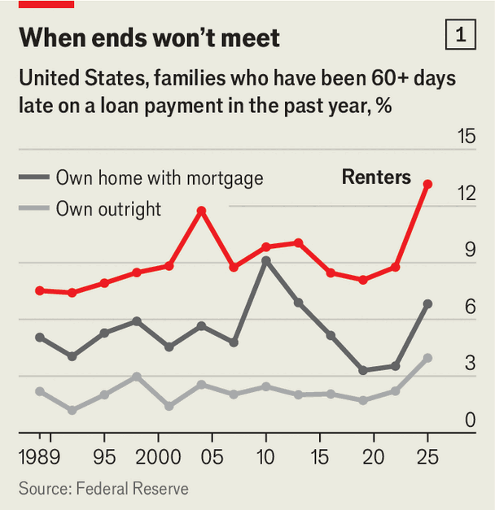
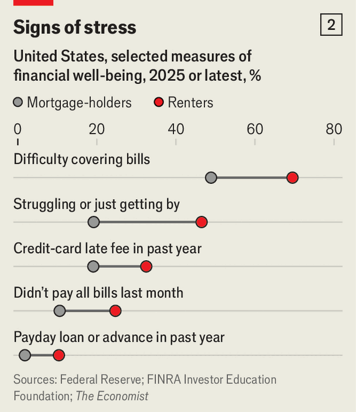

America’s renters are in serious trouble
Several gauges of their financial health are flashing red
Nov 5th 2026
Jacob ramirez, a 31-year-old operations manager for a café chain, has long struggled to make ends meet. In college he used a credit card to buy textbooks; after graduating, he occasionally did so to pay rent and utility bills. By 2022 he, his wife and their dog were in a one-bedroom flat in Pomona, east of Los Angeles. But rising rent and other expenses—“like an anaconda snake choking me out”—pushed him deeper into debt. In 2023, owing $28,000 on five cards, Mr Ramirez turned to a non-profit debt-counselling service. He is on track to pay his debts by 2028.
America’s economy is growing steadily, thanks to an artificial-intelligence boom and robust consumer spending. But for three or four years a divide has been opening between homeowners and renters like Mr Ramirez, who make up a third of American households. An analysis by The Economist suggests that tenants are increasingly missing payments and turning to costly short-term credit, even as homeowners’ finances remain resilient. Is America experiencing a renters’ recession?
Their difficulties represent a turnaround. During the global financial crisis of 2007-09 it was homeowners who suffered. By 2010 one in 20 mortgages was in foreclosure and one in ten delinquent. House prices had fallen by nearly a quarter; nearly one in four homeowners owed more than their dwellings were worth.

Now it is the turn of renters to suffer more. The Federal Reserve’s latest Survey of Consumer Finances (SCF), published last month, shows that in the past year more than one in eight were at least 60 days late on a loan payment, the most since records began in 1989 (see chart 1). Another Fed survey, in late 2025, found that a quarter had not paid all their bills in full the previous month, compared with one in ten mortgage-holders (see chart 2). About one in six finds it “difficult to get by”, more than three times the rate among mortgage-holders.
Some of the divide reflects demography. Renters tend to be younger, poorer and less educated: their median household income in 2025 was $57,000, against $103,000 for homeowners. But these characteristics explain three-fifths of the gap between renters and mortgage-holders, we calculate. What about the rest?
Partly, the rent. Since 2019 rents in America have risen by 42%, according to the Census Bureau, a government agency, while renters’ household incomes have gone up by 34%. Mortgage-holders’ housing costs outpaced their incomes by a similar margin. But much of this reflects higher payments for new buyers, who have been screened by lenders for their ability to pay and whose mortgage payments are typically fixed for several years. Renters face higher payments when leases expire, whether they can afford them or not.

Next, a lack of savings to fall back on. The typical renter has $2,000 in liquid savings, according to the SCF, versus $12,000 for mortgage-holders. Homeowners also tend to have larger investment portfolios. “A lot of homeowners are supporting their spending by withdrawing from their brokerage funds,” says Ted Gayer of the JPMorgan Chase Institute, a think-tank within a bank. The resumption of student-loan repayments after the covid-19 pandemic added to the strain, accounting for about half of the recent rise in renters falling behind on their debts, but only about a quarter of that among mortgage-holders.
Renters are putting off paying other bills. They have gone from being less likely than mortgage-holders to incur late fees on credit cards to being more likely, after controlling for income, age and other demographic factors, according to our calculations using data from the FINRA Foundation. Some renters are turning to other forms of short-term borrowing. Another Fed survey finds that more than one in ten took out a payday loan or pay-cheque advance in 2025, nearly twice the share in 2019. Saving must wait: “As rents increase, the ability to save, whether it’s for a down-payment, for an emergency, for whatever, is really much harder,” says Whitney Airgood-Obrycki of Harvard University’s Joint Centre for Housing Studies.
And some, like Mr Ramirez, are seeking help. Once his debts are cleared, he hopes to start saving for his own home. Others have a much longer road ahead. ■